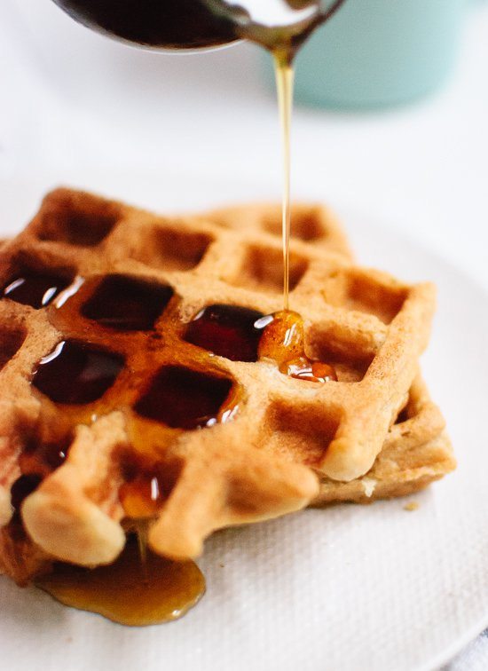

Back
Oat Waffles
Ingredients
- 1 ½ cups (128 grams) oat flour*, certified gluten-free if necessary
- 2 teaspoons baking powder
- ½ teaspoon salt
- Pinch of cinnamon, optional
- ¾ cup room temperature milk of choice
- 5 tablespoons butter, melted
- 2 large eggs
- 2 tablespoons maple syrup (make sure no corn syrup!)
- 1 teaspoon vanilla extract

Instructions
- In a mixing bowl, whisk together the dry ingredients: oat flour, baking powder, salt and cinnamon. In another bowl, whisk together the wet ingredients: milk, melted butter, eggs, maple syrup and vanilla extract.
- Pour the wet ingredients into the dry ingredients. Stir with a big spoon until just combined (the batter will still be a little lumpy). Let the batter rest for 10 minutes so the oat flour has time to soak up some of the moisture. Plug in your waffle iron to preheat now (if your waffle iron has a temperature/browning dial, set it to medium-high).
- Once 10 minutes is up, give the batter one more swirl with your spoon. Pour batter onto the heated waffle iron, enough to cover the center and most of the central surface area, and close the lid. Once the waffle is deeply golden and crisp, transfer it to a cooling rack or baking sheet. Don’t stack your waffles on top of each other, or they’ll lose crispness. If desired, keep your waffles warm by placing them in a 200 degree oven until you’re ready to serve.
- Repeat with remaining batter. Serve waffles with maple syrup and nut butter, or any other toppings that sound good!
Source